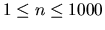
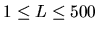
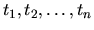
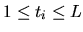

| Scheduling Lectures |
You are teaching a course and must cover n ( ) topics. The length of each lecture is L ( ) minutes. The topics require  ( ) minutes each. For each topic, you must decide in which lecture it should be covered. There are two scheduling restrictions:
With the above restrictions, it is sometimes necessary to have free time at
the end of a lecture.
If the amount of free time is at most 10 minutes, the students will be happy
to leave early.
However, if the amount of free time is more, they would feel that their
tuition fees are wasted.
Therefore, we will model the dissatisfaction index (DI) of a lecture by the
formula:
where C is a positive integer, and t is the amount of free time at the end of a lecture. The total dissatisfaction index is the sum of the DI for each lecture.
For this problem, you must find the minimum number of lectures that is
needed to satisfy the
above constraints. If there are multiple lecture schedules with the minimum
number of lectures,
also minimize the total dissatisfaction index.
6 30 15 10 10 10 10 10 10 10 120 10 80 80 10 50 30 20 40 30 120 100 0
Case 1: Minimum number of lectures: 2 Total dissatisfaction index: 0 Case 2: Minimum number of lectures: 6 Total dissatisfaction index: 2700